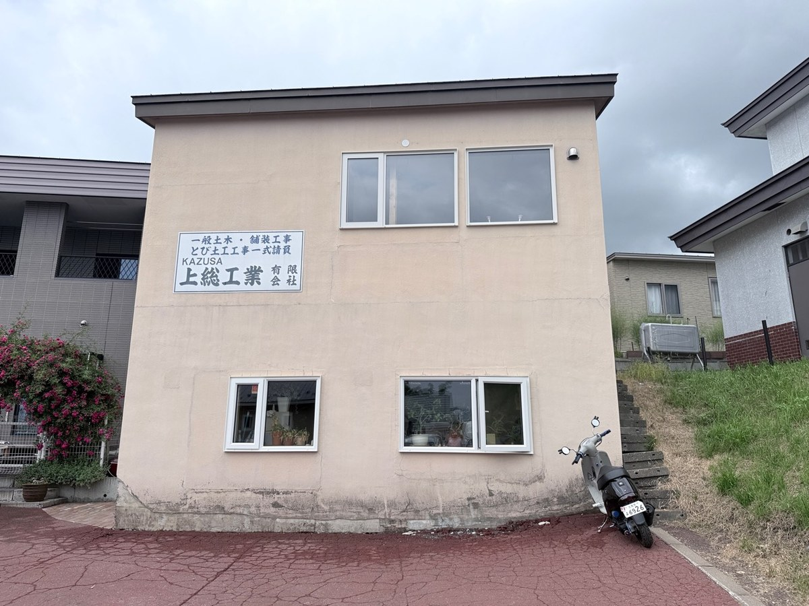
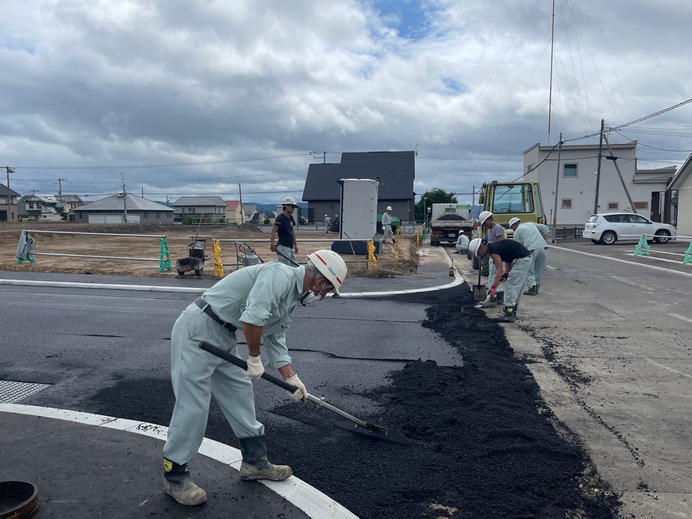
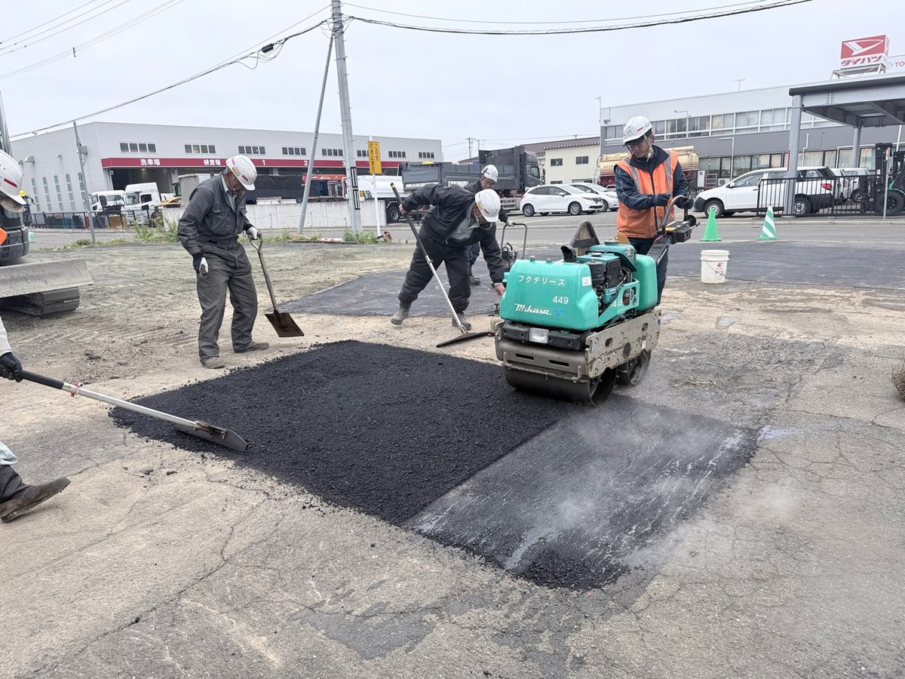
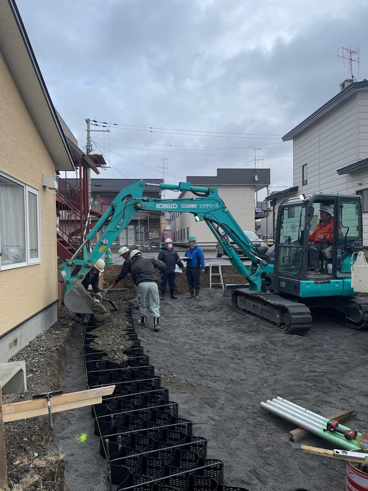

道路補修
傷んだ路面や段差を整え、安全に通行できる道路環境を保ちます。
創業以来、北見エリアを中心に土木・舗装工事で実績を積んできました。道路や駐車場、個人宅まわりの舗装など、地域の移動と暮らしを支える仕事に取り組んでいます。

現場ごとに状況を確認し、重機・車両・スタッフが連携して、安全で丁寧な施工を進めています。地域の道路、住宅まわり、生活に必要な舗装を支える会社です。
傷んだ路面や段差を整え、安全に通行できる道路環境を保ちます。
道路、敷地内通路、駐車スペースなどの舗装工事に対応します。
住宅まわりのアスファルト補修や使いやすい動線づくりを行います。
舗装に関わる下地づくりや構造物まわりの施工まで、現場に合わせて進めます。



道路補修、アスファルト舗装、住宅まわりの舗装修繕など、お気軽にご相談ください。